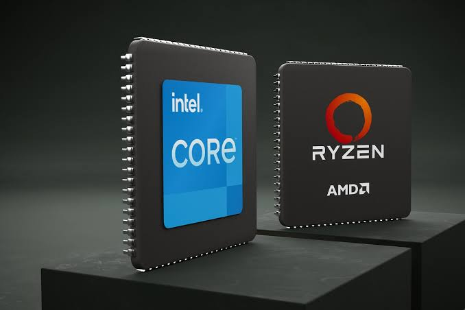
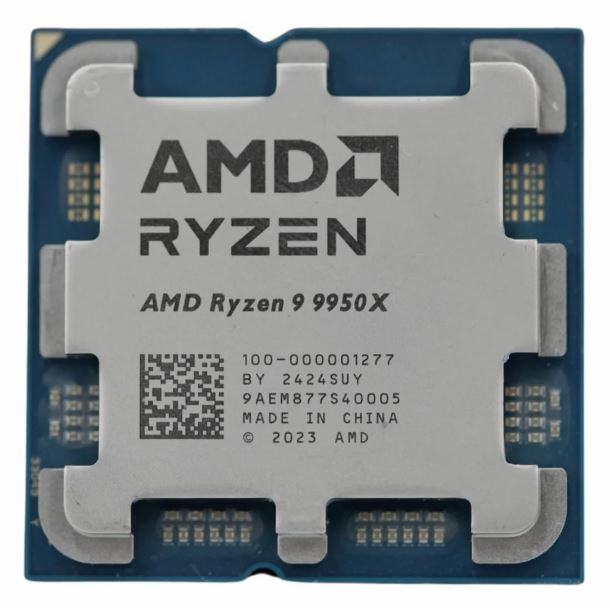
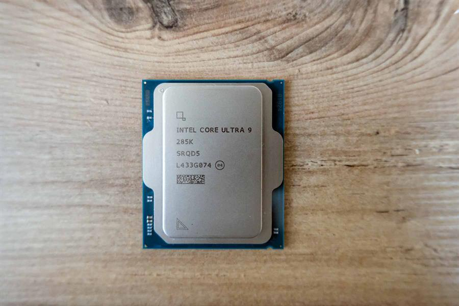
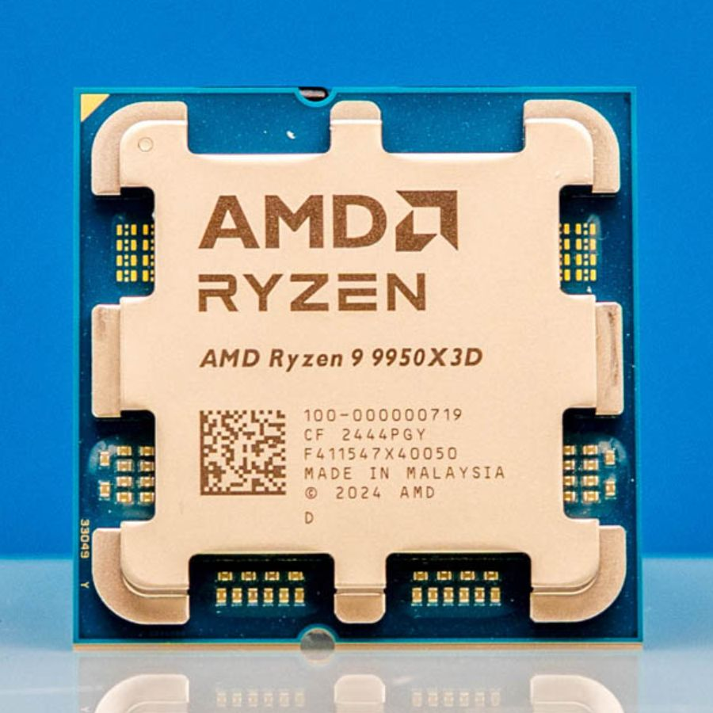

El Ryzen 9 9950X sería una excelente opción para la mayoría de los desarrolladores y creadores de IA. Sus excelentes capacidades multinúcleo, compatibilidad con DDR5 y PCIe 5.0 facilitan la gestión de tareas de aprendizaje automático, difusión estable, LLM locales y creación de contenido.
Ideal para:
Ventajas

Cuando tus tareas impliquen programación de IA y productividad, como el uso de Adobe Creative Suite, Unreal Engine o el desarrollo de software, deberías seleccionar la mejor CPU Intel para ordenadores de sobremesa.
Ideal para:
Ventajas

¿Quieres jugar y trabajar en el mismo ordenador? No busques más: el Ryzen 9 9950X3D ofrece un excelente rendimiento en inteligencia artificial y, a la vez, se encuentra entre las CPU para juegos más rápidas.
Ideal para: